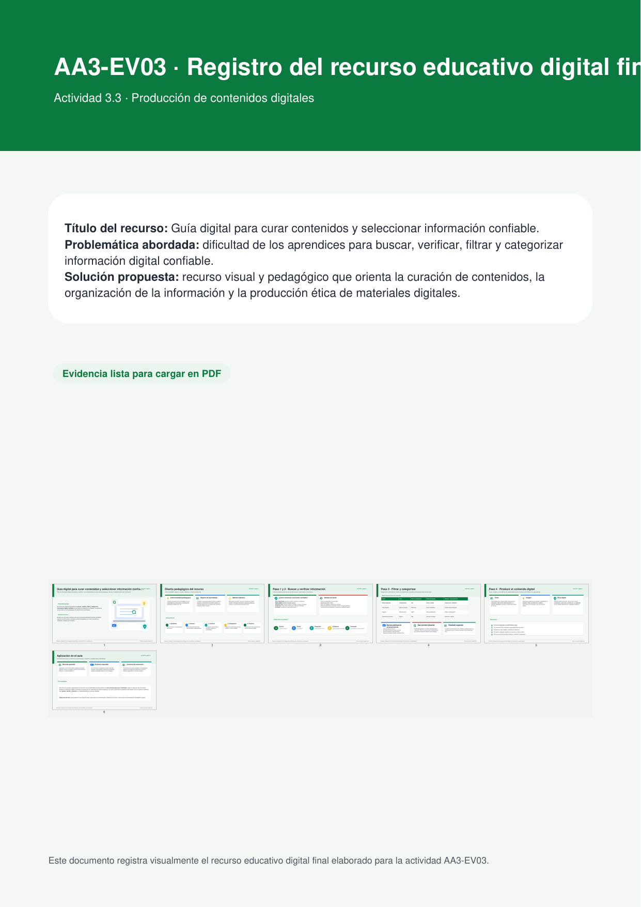
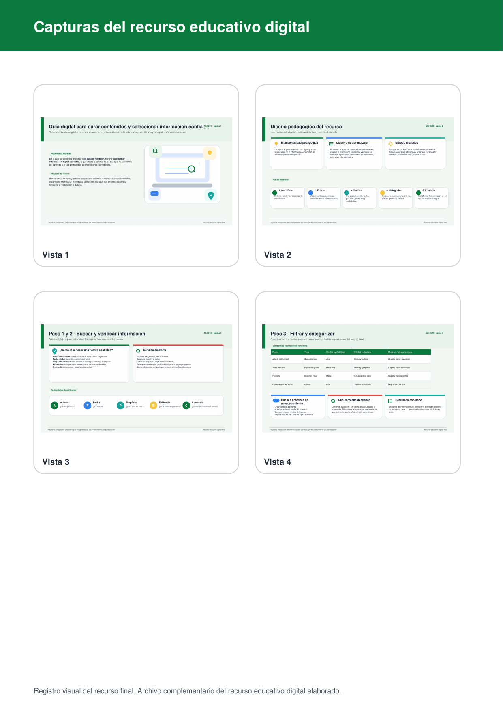
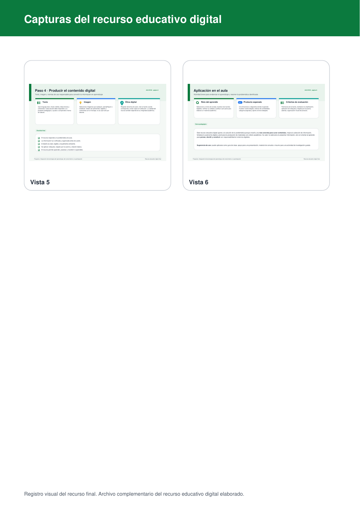
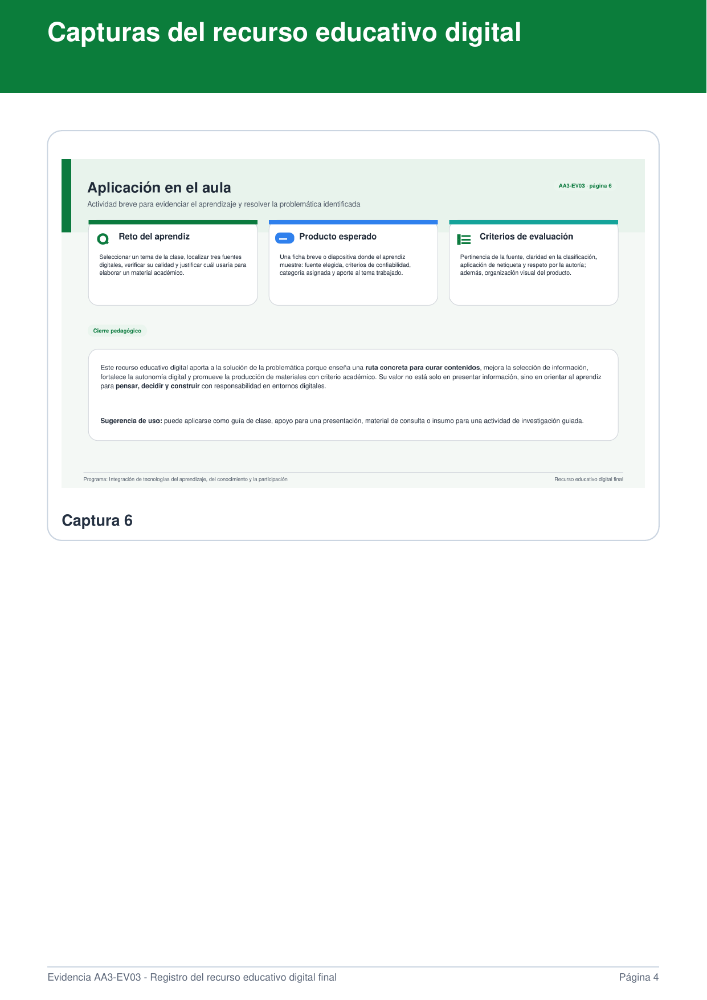

Este espacio presenta el recurso educativo digital elaborado para fortalecer en los aprendices la búsqueda, selección, verificación, organización y uso responsable de contenidos digitales en contextos de formación.
En la práctica pedagógica se evidencian dificultades en algunos aprendices para localizar información pertinente, verificar la confiabilidad de las fuentes, organizar hallazgos y utilizar mediaciones tecnológicas con intención formativa. Esta situación afecta la calidad del aprendizaje, la autonomía digital y la toma de decisiones frente al uso de recursos en línea.
Diseñar y socializar un recurso educativo digital que oriente a los aprendices en la curación de contenidos digitales, promoviendo habilidades para seleccionar, clasificar y usar información confiable con criterios éticos, comunicativos y académicos.
El recurso final fue diseñado como una presentación educativa de apoyo para el aula. Integra texto, imágenes y estructura visual clara, con intencionalidad pedagógica orientada a resolver la problemática detectada. Presenta una ruta didáctica para buscar, verificar y organizar contenidos digitales de manera segura y pertinente.




Se consolidaron criterios para distinguir información confiable, pertinente y actualizada frente a contenidos poco rigurosos o carentes de respaldo.
El recurso integra mediaciones tecnológicas como apoyo a la enseñanza, con enfoque claro, visual y útil para ambientes de aprendizaje presenciales o virtuales.
Se promueve netiqueta, respeto por la autoría, citación de fuentes y distribución ética del contenido digital elaborado.
Este sitio fue estructurado para publicarse fácilmente en una plataforma gratuita como GitHub Pages, ya que permite alojar páginas HTML de forma ordenada y compartir un enlace de acceso directo al proyecto.
También puede adaptarse a Google Sites, Wix o Webnode si se prefiere una edición visual sin código.
El recurso se presenta con fines educativos. Debe conservarse el reconocimiento de autoría de los materiales producidos y verificarse el uso permitido de imágenes, textos o recursos complementarios antes de su redistribución.
Se sugiere publicar el recurso indicando una licencia de uso educativo no comercial y citando las fuentes empleadas, para favorecer la circulación académica responsable y el respeto por la propiedad intelectual.